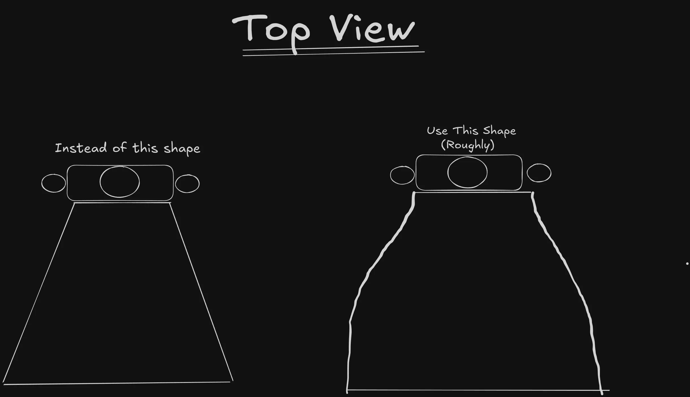

Intro
I got the idea for the Vedal Mech Suit while scrolling through Reddit. One artwork caught my attention. It was probably AI generated, but it had a style that made me want to recreate it in 3D. I wanted to give the design my own personality and make it feel real.

Concept Board
I put together a small concept board to guide the direction of the suit. This helped me figure out the overall shape and style before diving into the details.

Initial Tests
These were made in about six hours spread across two days. They were not perfect, but they helped me understand what would and would not work.

What I Learned
- Joint design is extremely important for mechanical characters. Good references save you a lot of trouble when you begin rigging.
- It is best to mirror objects using the closest matching target. This avoids alignment issues and cleanup.
- Blender renders look much better after color grading and post-processing.
- You can change parts of the reference design if it helps the workflow or improves the model.
- Choosing a color palette early makes the whole process easier.
- Shortcuts that helped include Ctrl+M for mirroring and Alt+S for shaping quad spheres.
- Clean bevels with supporting loops are essential for hard-surface work.
What I Need to Improve
- I struggled with some of the hard-surface topology, especially around the upper arm. I need to avoid using too much subdivision too early.
- I want to get better with rigging, especially IK, constraints, and basic creature rigs.
Final Renders
After improving the model and adding post-processing, the suit finally came together in a way I was happy with.

Cape Simulation
The cape is just a plane with cloth simulation and pinned vertices. The interesting part is how the shape affects the movement. A small change in the outline can make the cloth look much more natural.
Reference
None